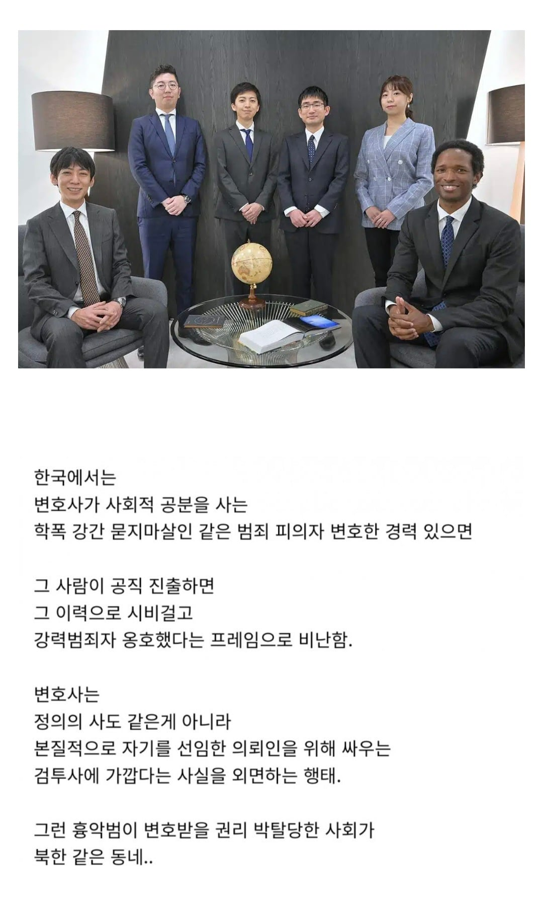
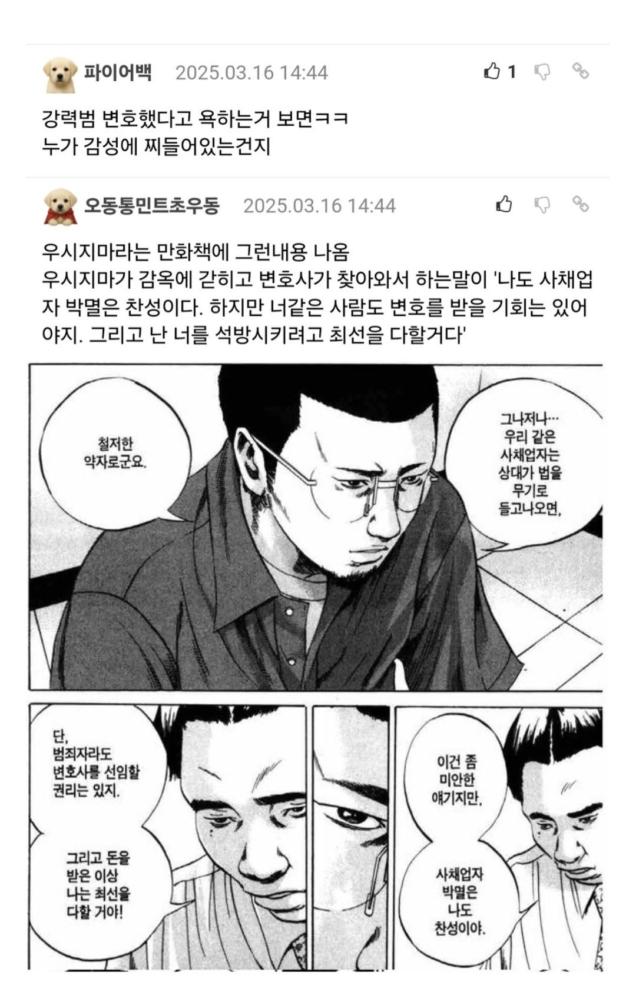

변호사는 정의의 사자가 아니라 검투사에 가까운데


변호사는 정의의 사자가 아니라 검투사에 가까운데
변호사가 공직 기웃거리는건 그 경력가지고 나중에 다시 변호사 했을 때 한탕 하려는게 대부분임 ㅋㅋ
검투사보단 용병이나 대리인(챔피언) 같은 개념이 맞지 않으려나?
돈이든 명예든 쥐여주고 대신해서 싸워달라는 거니까
하지만 챔피언이라고 얘길하면 롤을 먼저 떠올리지
그것도 소환사를 대리해서 싸운다는 거기서 온거 아님?
ㅇㅇ 맞지
'흉악범 변호해준 변호사가 욕먹는다' 랑 '흉악범이 변호받을 권리가 박탈되었다.' 는 별개의 이야기임.
우리나라가 국선변호사나 여타 제도를 통해서 아무리 흉악범이라도 변호사 한명 데리고 법정에 들어갈 수 있으면, 심지어 개인이 선임해서 데려갔다고 하면... 그건 오히려 변호받을 권리가 충분히 보장되고 있는 거 아님??
욕먹는 게 싫어서 변호사들이 흉악범 변호를 꺼리게 된다고 한다면, 흉악범들은 변호사를 선임하기 위해 더 많은 비용을 지불하게 되거나 국선변호사의 도움을 받으면 되는 건데, 현재의 행태는 문제가 없어보임.
흉악범의 변호받을 권리를 이야기할 거면 국선변호사의 불성실 문제를 지적했어야지.
경우에 따라서 전범도 변호해줘야 하는게 변호사지
스시버거 주면 변호해야지
공직에 나설 뜻을 품었으면 아무리 돈이 좋아도 사건도 좀 가려받고 조심하는 분위기가 있어야지.
파파라치 연예계 기사나 쓰던 기자가 선출직 공무원 하겠다고 나서면 조롱받고 비난받겠지. 그럼 연예기자는 불법인가?
자기 경력관리 하라는 건데 아무 문제 없어 보임.
솔직히 이런 얘기를 백날 해도 ‘변호사 = 범죄자 옹호하는 사람’으로만 보는 사람이 너무 많음.
나는 형사사건을 안 다룸. 다만 형사사건을 다루는 분들을 보면 나름의 사명감을 갖고 일하는 분들이 꽤 있어 보임.
형법과 적법절차가 존재하는 이유는, 누군가를 죄인으로 몰아서 처벌하기 전에 증거를 확인하고 변론할 기회를 주자는 것임. 처벌하더라도 정해진 법과 절차에 따라 하자는 거고.
Blackstone’s ratio라는 말이 있음. 열 명의 죄인이 처벌을 피하는 편이 한 명의 무고한 사람이 처벌받는 것보다 낫다는 원칙임. 범죄자를 풀어주는 게 좋다는 뜻이 아니라, 억울한 사람을 처벌하는 일을 그만큼 경계해야 한다는 뜻임.
물론 “왜 저런 새끼까지 변호하지?”라는 감정은 충분히 들 수 있다고 봄. 나도 이해함. 그래도 최소한 변론은 들어보고 판단하는 게, 묻지도 따지지도 않고 대가리부터 깨놓고 “아님 말고ㅋ” 하는 것보다는 발전한 사회 아닌가.
물론 모든 의뢰인이 억울한 사람인 것도 아님. 나도 일하다 보면 더러운 꼴 많이 봄. 그런데 잘못한 사람이라도 자기 죄에 맞는 처벌을 받아야 함. 죄가 5라면 5에 맞게 처벌받아야지, 사람들이 싫어한다고 10으로 처벌받아도 되는 건 아니잖음. 실제로 하지 않은 일까지 책임지거나, 충분히 참작할 사정이 있는데도 제대로 설명하지 못하는 일은 막아야 하는 거고.
변호사가 무슨 흉악범을 무죄로 바꾸는 마법사도 아님. 그 사람 편에서 증거와 법리를 따지고, 그 사람이 가진 법적 권리를 최대한 보장받도록 돕는 사람임. 그 권리를 보장하는 것과 그 사람이 저지른 범죄를 옹호하는 건 별개의 문제임.
그리고 댓글에 증거조작 얘기도 있던데, 그건 단순히 윤리의 영역이 아니라 범죄의 문제임. 변호할 권리와 증거를 조작할 권리는 전혀 다른 얘기고, 후자 같은 권리는 애초에 없음.
정의가 뭐냐는 질문에 변명할 기회를 주는 것이라는 답변이 가장 맘에 듬.
변호사도 그 변명할 기회를 주는 사람일 뿐이라고 보면 전부 이해가 감
형사를 아예 안해? 우리한테 그래도 마르지 않을 샘물은 형산데
공직이 안나오면 맞는말인데
나오면 그때부턴 좀 다르다고 생각
그냥 UFC 임
누구돈을 받든 검은돈이든
글쎄, 어디가든 고용된 법정 챔피언이란 개념은 조금씩 옅어져가는 것 같음. 미디어의 노출 스포트라이트, 정치적 어젠더의 유불리등등은 어디가든 피부에 점점 자주 눌리는 편이니까.
지금 미국에서 린지 클랜시 사건 보면 이 사건이 진짜 보통 진흙탕이 아닌데... 미국도 사람 사는 곳이라서, 클랜시측 변호인 욕하는 사람도 많음.
걍 국평오라서 그럼. 악역 배우 보고 욕하는 거랑 다를 게 하나도 없음
정의는 특수촬영 영웅물과 소년점프에만 있는 거라고 생각해라. 자기 의뢰인의 이익만을 위해서 전력을 다해 싸우는 것. 우리들 변호사가 가능한 것은 그것뿐이며 그 이상의 일은 해서도 안 돼.
저거 헛소리인게 무죄라고 주장하는 사람들만 수임하는 로펌이나 변호사도 많음 미국에도
양쪽말을듣지않는게 변호사임 근데 우리나라는 양쪽을 다들어봐야된다는걸 변호사들한태 강요하는 경향이 있는데 미친 쥬니어새끼들이 상대방말을 쳐듣고왔네? 이걸찢어 죽여야하나....
인권이 뭔지 모르나봄 ㅇㅇ 변호사가 공직을 위해서 사건을 가려받는다 자체가 이상한 이야기로 안보임?
공직으로 갈려면 가려받는게 맞긴 함 이미지가 중요하거든 국민을 위해 일하는 사람이 되겠습니다 하는데 연쇄살인마 강간마등 강력범죄자 변호 했다고 하면 이때부터 이미지가 안좋아지자나
공직에서 그냥 반대를 위한 반대로 공격포인트 되는것도 맞는데
지입으로 인권변호사, 약자의 편 이래놓고 조폭, 고위공직자 강력범죄 변호 수차례 한거 들키면 도덕성 논란이 있어야 정상아니냐 ㅋㅋ
역전재판 ㅋㅋㅋㅋ